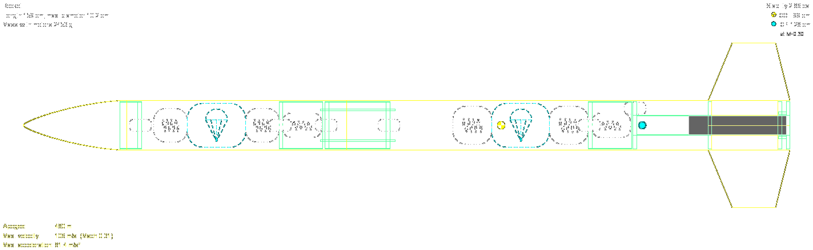
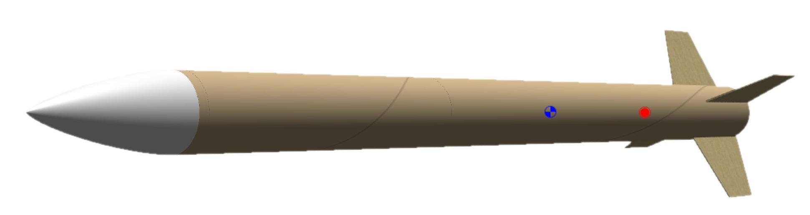
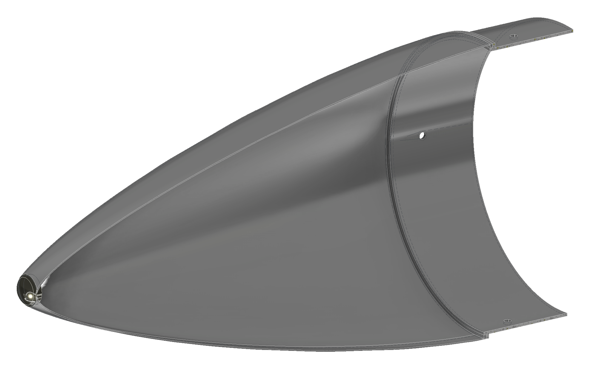
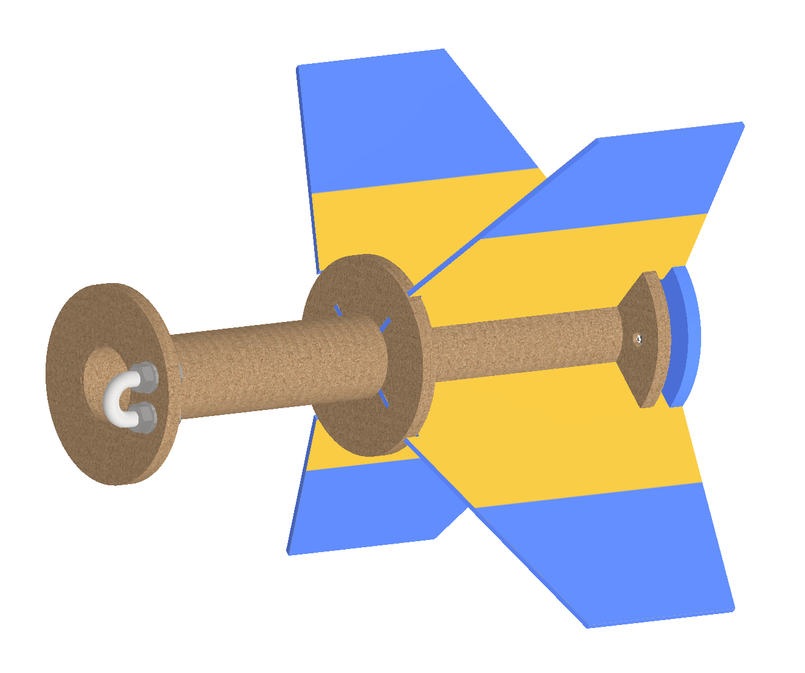
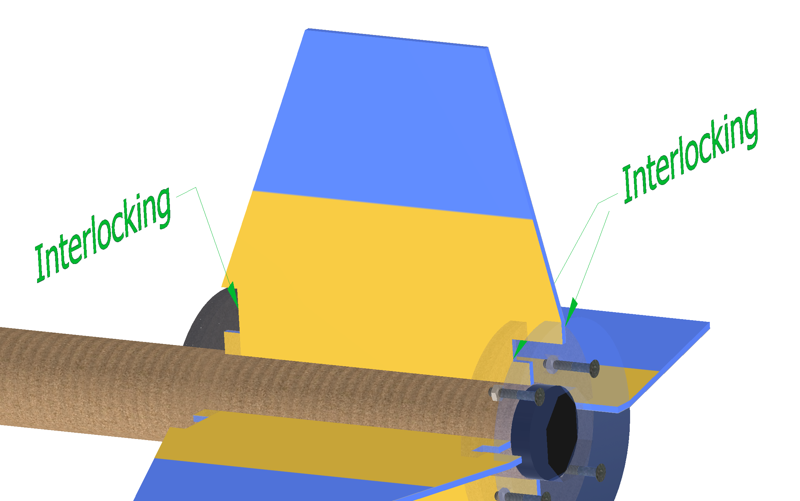
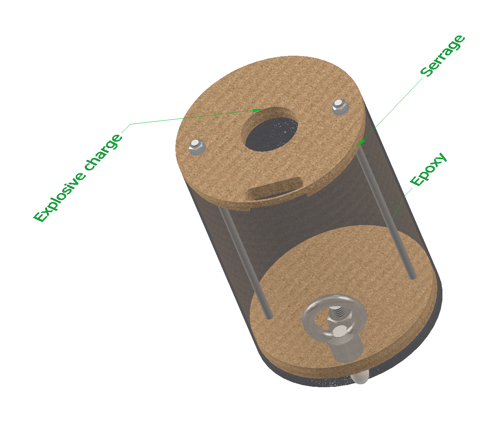
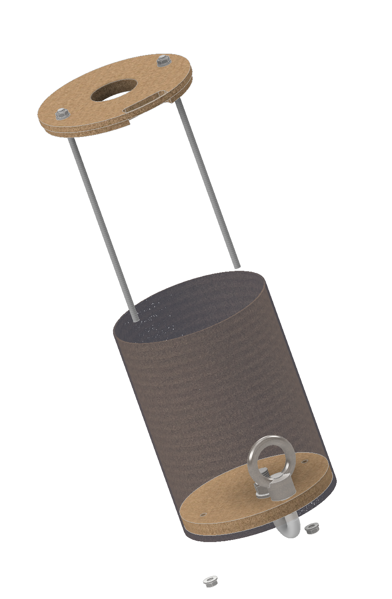

Introduction
Tripoli rocket certification level 1 is obtained by successfully manufacturing, launching and recovering (using a single parachute) a rocket of a certain power. I choose to design the rocket myself for budget and experience reasons. So far, I have completed the structure design and started manufacturing it.
I wanted my rocket to be able to pass the level 1 and level 2 certifications (level 2 requires a drog chute and a main chute) with only slight modifications to do on the rocket.
That’s all for the introduction, let’s dive in the design phase.
Design
Dimensions
The rocket was design on OpenRocket, the main specs are:
- tube diameter : 10.2cm
- rocket length : 159cm
- fin number : 4
- level 1’s stability: 2.33
 
Nose cone
The nose cone is a Von Kármán profile (except the nose-tip which is a sphere) specificaly designed to minimize the drag for a given length and diameter. 
Choc cord and their fixation
The best choc cords are made out of kevlar but cost money, thus I wanted them to be interchangeable. Moreover, it would then be possible to switch the chute without having to undo the knot between the cord and the chute but rather unlock the karabiner between the cord and the rocket’s structure.
Propulsion sub-assembly
The fins must be strongly fixed to the rocket because of the heavily loads a slight angle in the rocket trajectory would produce.
The fixation I came up with is a mix of interlocking and gluing to have the maximum rigidity. The interlocking takes place on each fins at 3 contacts : the contact between the fin and the middle-centering-ring, the bottom-centering-ring and the retainer-ring.  
Avionic bay
Avionic is necessary to trigger the explosive charges needed to deploy the chutes
Moreover, the electronic must be easily put in and out of the avionic bay (the electronic is fastened on the long rods)
The bottom bulkhead is glued to the bay’s tube in opposite to the top bulkhead which is just matted with the tube.
It’s thus possible to remove the whole avionic by just unscrewing the bolts under the bottom bulkhead (pictures below).  
Manufacturing
Nose Cone
The nose cone is a complex shape, I choose to 3d print on the Prusa i3 mk3 as a one layer shell with a continuous rising of the Z axis (vase mode). Once printed, the nose-cone wasn’t strong enough and the surface roughness was very high (I want the smoothest surface possible to have a nice glossy paint). I applied epoxy usualy used for lamination on the inner and outer side of the shell, making it stronger and smoother (require some grinding though).
Still it is not strong enough, to make it sturdier, I could :
- pour foam in the inner shell
- add some renforcements on the inner shell and pour foam in the inner shell
- add layer(s) of fiber glass in the nose cone I haven’t definitively choose yet the solution, but I’m pretty sure I will go for the third one (most of the people in the EPFL Rocket Team uses this solution, moreover I have at last a mask for composite)
Tube
The tube are made out of phenolic cardboard, some kind of super cardboard I use one tube of 91cm long and another of 45.5cm long I cut from a 91cm long tube. I then roughly cut the slot for the 4 fins and grind to get the desired width and length.
Bulkheads
In order to rigidify the rocket and other function, bulkheads (which are cylindrical sections glued to the tubes) need to be cut.
For this I used a cnc laser cut (this one), and use as the raw material various MDF width plank (3mm, 5mm and 8mm). I think I should have make one of the top-centering ring (its a hollow bulkhead) widder in order to prevent its fracture during chute deploying
Gluing
The bulkheads and tube are glued with epoxy Alderine of cure time 90mn.